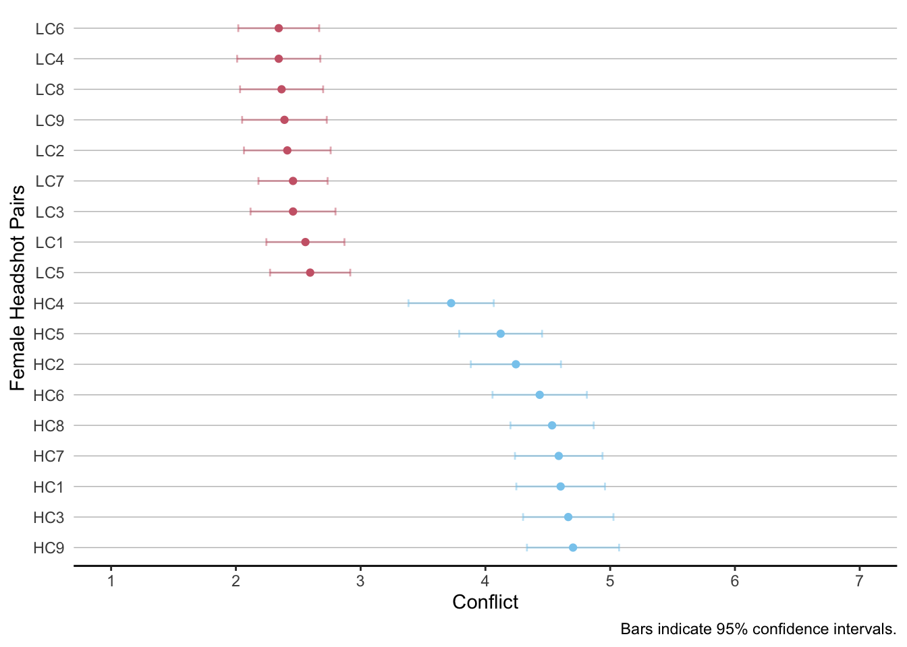
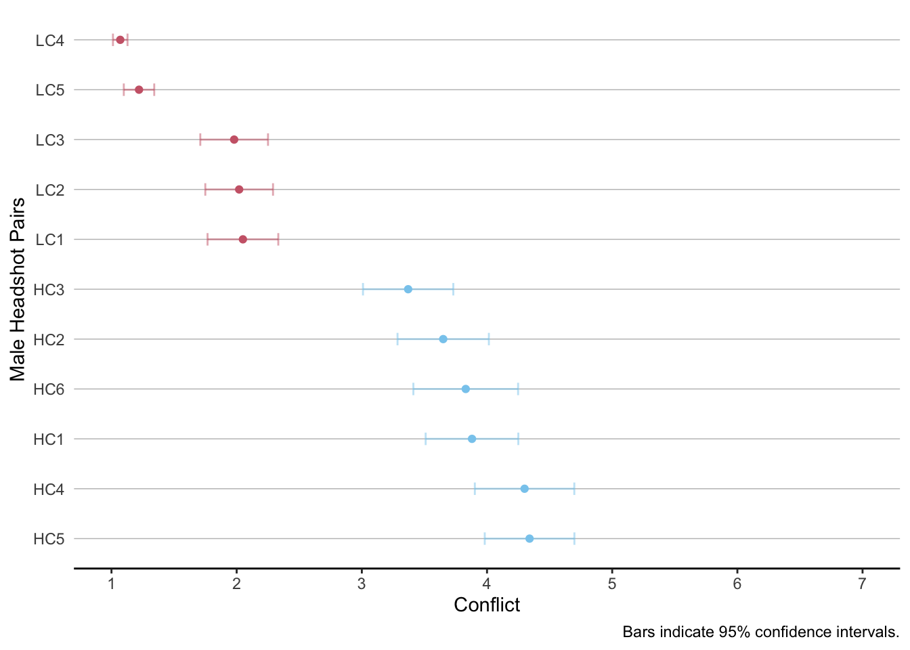

Appendix A — The Sound of Certainty
A.1 Pre-Test
The document processes and analyzes data generated in a pre-test. The pre-test aimed to identify pairs of model headshots between which participants found it hard (easy) to decide. The identified pairs of two serve as stimuli for the high (low) conflict condition in Study I.
Procedure: We conducted two online experiments to pre-test eighteen pairs of female headshots as well as eleven pairs of male headshots in October 2022 and August 2023, respectively. Both pre-tests followed the same procedure and led participants through a series of decisions in which they were exposed to two model headshots. For each of these pairs of headshots their task was to indicate which they find more attractive and how difficult they found the decision to be.
Participants: 131 Prolific panelists (\(M_{age} =\) 24.28, \(SD_{age} =\) 2.76; 40% female) completed the pre-test studying female headshots whereas 100 Prolific panelists (\(M_{age} =\) 39.72, \(SD_{age} =\) 14.24; 43% female) completed the pre-test studying male headshots.


The visualizations show on two accounts that the low conflict pairs (abbreviated with LC and colored in red) are perceived significantly different than the high conflict (HC, blue) pairs.
The visualizations also show that there is some variation within these two conditions. We’ll choose the pairs that are the most extreme: e.g. we pick the pairs that represent the highest (lowest) conflict for the HC (LC) condition.
Hence, we implement the pairs listed in the following table. The first column refers to the codes used in this analysis (displayed in the visualizations). The second column refers to the gender of the models shown in each pair and the last columns displays the file names implemented in oTree.
| Code | Gender | File Names |
|---|---|---|
| HC3 | female | HCP1A, HCP1B |
| HC9 | female | HCP2A, HCP2B |
| HC4 | male | HCP3A, HCP3B |
| HC5 | male | HCP4A, HCP4B |
| LC8 | female | LCP1A, LCP1B |
| LC9 | female | LCP2A, LCP2B |
| LC5 | male | LCP3A, LCP3B |
| LC4 | male | LCP4A, LCP4B |
A.2 Stimuli
All stimuli can be found in our Github repository.